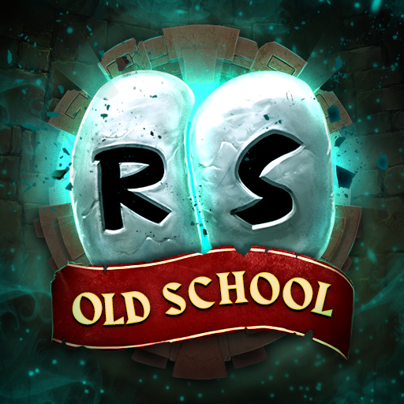

Bienvenido a OldschoolRunePedia!!
OldschoolRunePedia es una enciclopedia de Oldschool RuneScape, donde podras encontrar informacion sobre todo lo que necesites saber sobre el juego.

Que es Oldschool RuneScape?
Oldschool RuneScape es un juego de rol multijugador masivo en linea, desarrollado por Jagex y lanzado en 2007. El juego es un remake del juego original de 2001, RuneScape, y se basa en el mismo motor de juego. El juego es gratuito para jugar, pero los jugadores pueden comprar membresias para obtener acceso a contenido adicional.